1 · Getting Started
AYVP office • vocabulary • listen & read • T/F game
At the AYVP office
AYVP office • vocabulary • listen & read • T/F game
ASEAN news • headlines • word detective • flags challenge
Exit tickets + short opinion sharing
Look at the shape of the country.
Guess the country — 1 point.
All correct? Your group gets a bonus!
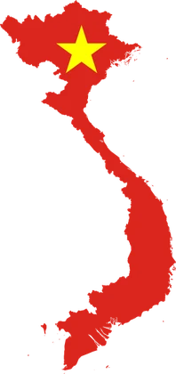
Viet Nam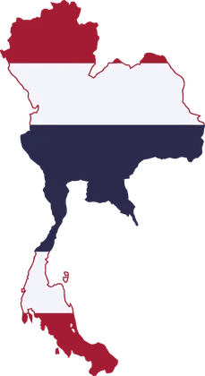
Thailand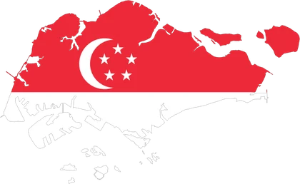
Singapore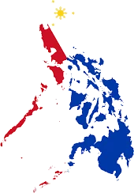
Philippines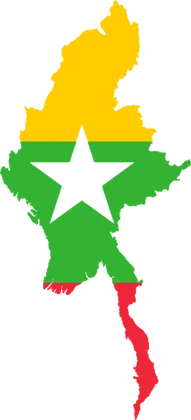
MyanmarLead-in question: What do these countries have in common?
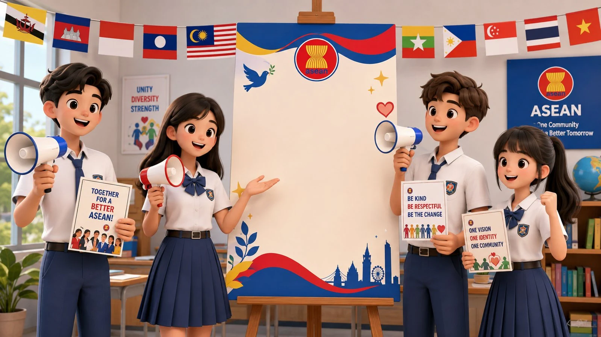
AYVP connects young people in ASEAN through volunteering and community projects.
How can Mai prepare to join the programme?
Key idea: Youth can create impact when they take part in meaningful projects.
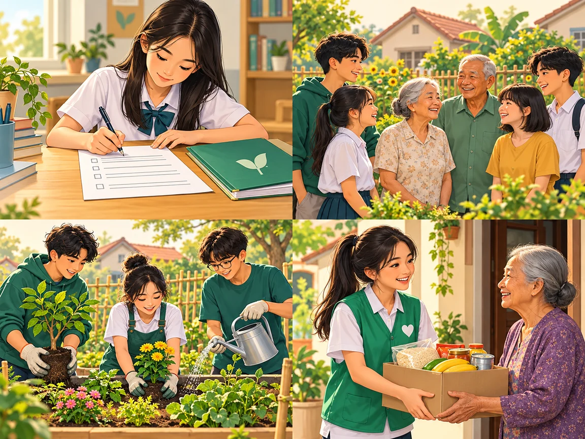
a person who helps without being paid
Example: Many young people volunteer to help their community.
volunteer (n/v) • volunteering (n)
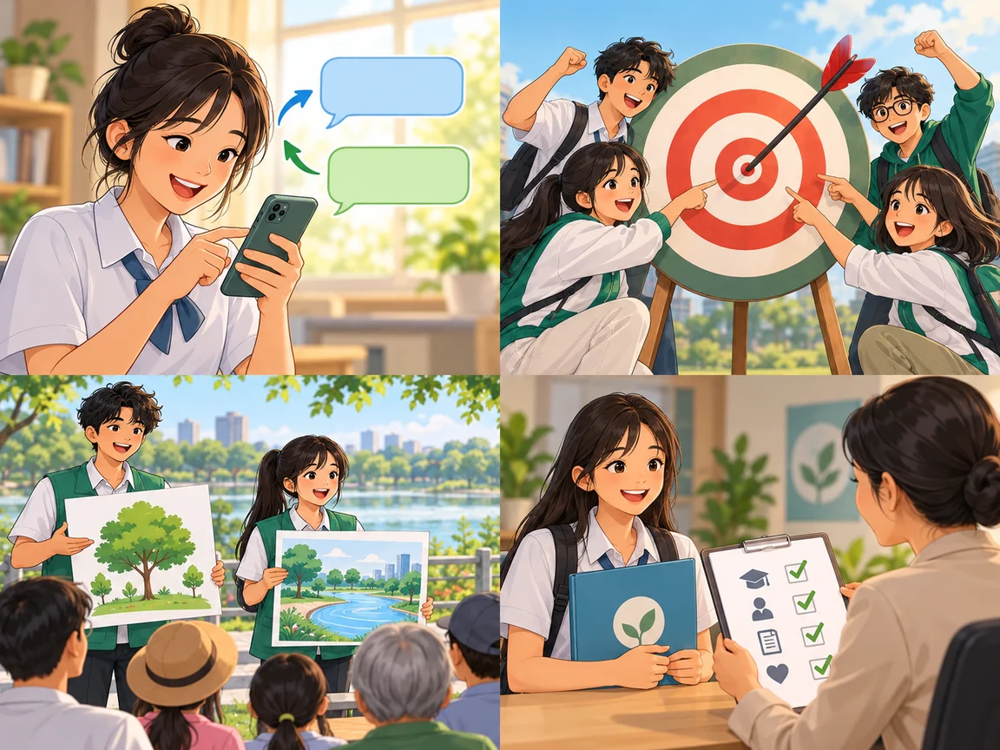
to answer someone by speaking, writing, or emailing
Example: Ms Pang replied to Mai’s email.
reply to an email / a message
to join or participate in an activity
Example: Students took part in cultural activities.
= participate in
something you hope to achieve
Example: One goal of AYVP is to promote youth volunteering.
set / achieve / reach a goal
to encourage or help something develop
Example: AYVP promotes youth volunteering in ASEAN.
promotion (n)
to have the training, skills, or experience needed
Example: You must be qualified for the programme.
qualified (adj) • qualification (n)
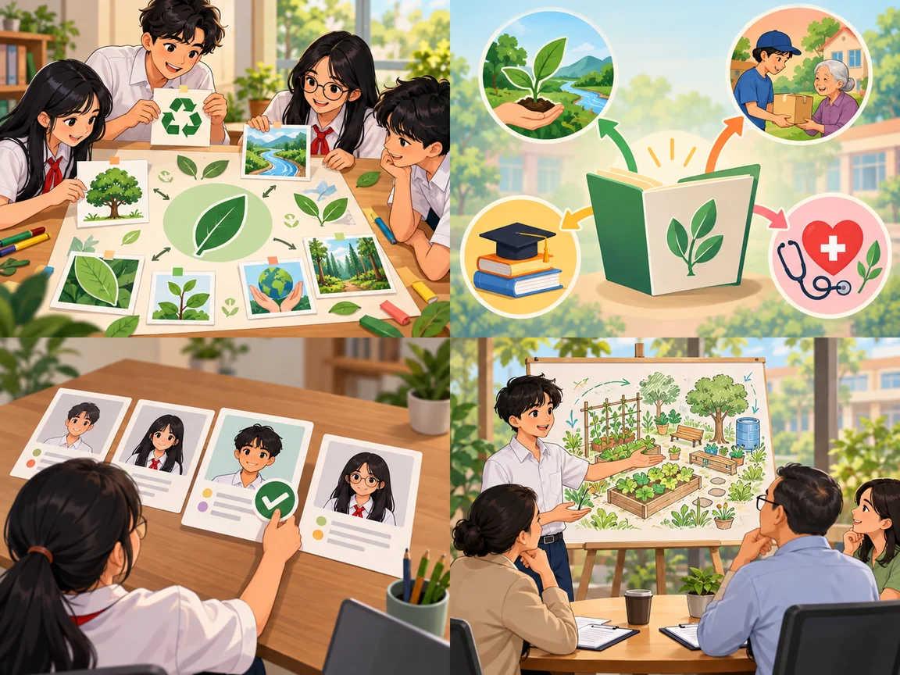
the main subject of an event or programme
Example: Check the website to find this year’s themes.
theme of the year
to include or deal with a subject
Example: AYVP covers eight themes this year.
cover = include / deal with
to choose someone or something carefully
Example: Volunteers are selected after an interview.
selection (n) • selected (adj)
to suggest a plan or idea
Example: Applicants may propose a community project.
proposal (n) — useful for Writing
a planned activity that helps people in a local area
Example: Planting trees can be a community project.
project related to the community
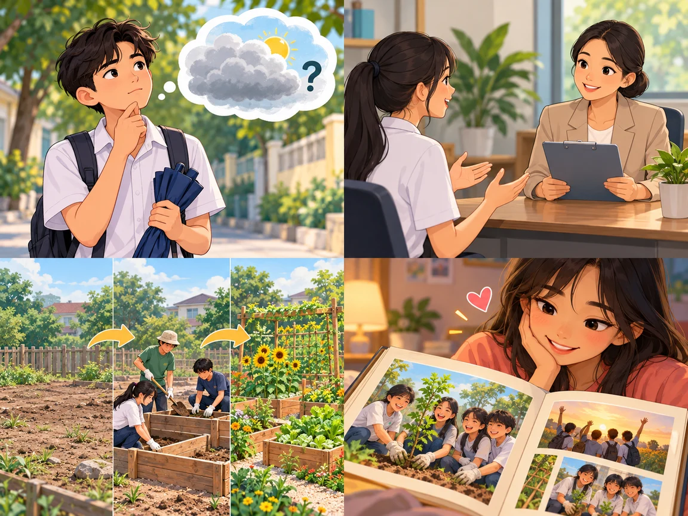
used when something is likely to happen
Example: We will probably interview you.
probably ≈ likely
a formal meeting where people ask and answer questions
Example: They may interview Mai before selecting her.
have an interview • interview someone
the process of growing or becoming better
Example: AYVP helps the development of the ASEAN community.
develop (v) • developed/developing (adj)
so good or special that you will always remember it
Example: Taking part in AYVP was an unforgettable experience.
forget → unforgettable
reply ___ an email
totake part ___ a programme
inpromote youth ___
volunteeringbe qualified ___ AYVP
forcheck this year’s ___
themespropose a community ___
projecthave an ___
interviewan unforgettable ___
experience1. volunteer
c2. qualified
d3. development
b4. goals
aa. things that you hope to achieve
b. the process of becoming bigger and better
c. someone who does a job without payment
d. having the training or experience to do a job
Pair work: 90 seconds → compare answers.
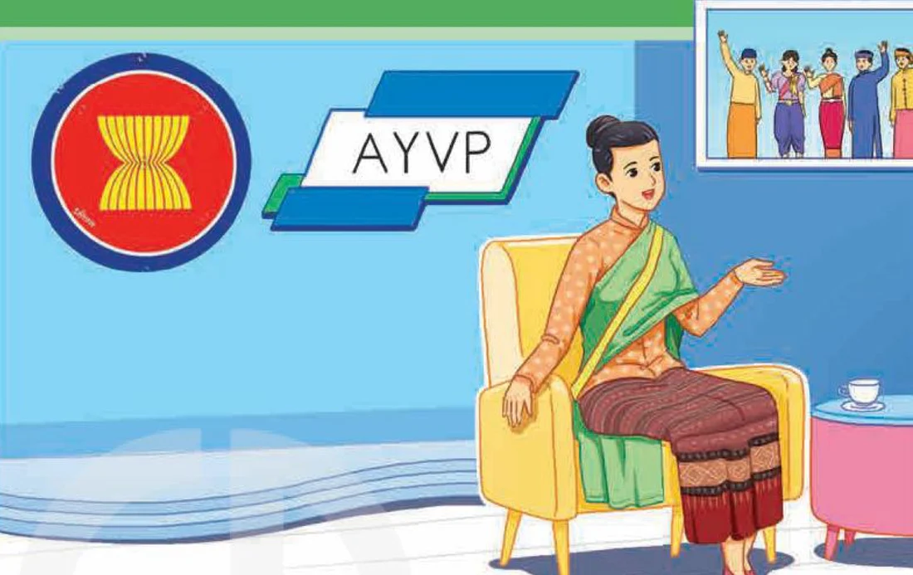
Tip: underline names, places, and purposes while listening.
Mai: Good afternoon. My name’s Mai Nguyen. Are you Ms Pang? You replied to my email and invited me to visit your office.
Ms Pang: Yes, I’m Ms Pang. It’s nice to meet you, Mai. So how did you hear about us?
Mai: My cousin was an AYVP volunteer. He often said taking part in the programme was an experience he would never forget.
Ms Pang: Glad to hear that. The main goals of AYVP are promoting youth volunteering and helping the development of the ASEAN community.
Mai: What can I do to prepare for the programme?
Ms Pang: Well, to become an AYVP volunteer, you must be qualified for the programme, and this depends on the themes for the year.
Mai: What are the areas covered by AYVP?
Ms Pang: There are eight themes. I suggest checking our website to find out this year’s themes.
Mai: How are volunteers selected?
Ms Pang: To be selected, you should be over 18. Then you may need to propose a community project related to the theme. And we’ll probably interview you to make sure you speak English well and are very keen on participating in the programme.
Mai: That doesn’t sound too difficult. Thanks so much for meeting me.
Ms Pang: You’re welcome.
Mai Nguyen and Ms Pang
At the AYVP office
Mai wants to prepare for the programme
Now read again for details.
Mai is a member of AYVP.
FALSEEvidence: She visits the office to ask about the programme.
One aim is to help young people volunteer.
TRUEEvidence: “promoting youth volunteering”
Mai can only find last year’s themes.
FALSEEvidence: She can check this year’s themes on the website.
Mai can apply when she turns 18.
FALSEEvidence: “To be selected, you should be over 18.” She must be older than 18.
1. ______ in the programme was an unforgettable experience for Mai’s cousin.
Taking part2. The main goals of AYVP are ______ youth volunteering and ______ the development of the ASEAN community.
promoting • helpingPair work: complete → compare → check with the conversation.
3. Ms Pang suggested ______ their website.
checking4. Mai thanked Ms Pang for ______ her.
meetingPair work: complete → compare → check with the conversation.
in the programme was an unforgettable experience
the development of the ASEAN community
their website
her
Noticing: many answers are -ing forms. We will learn more about gerunds in the next Language lesson.
new words I remember
thing I learnt about AYVP
Would you like to join AYVP? Why/Why not?